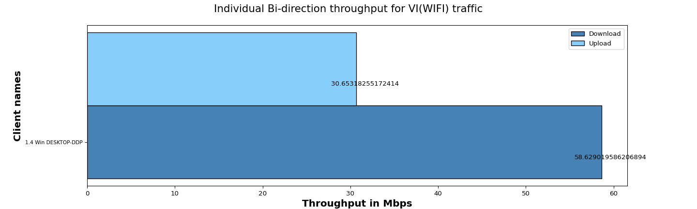

Objective
The objective of the QoS (Quality of Service) traffic throughput test is to measure the maximum achievable throughput of a network under specific QoS settings and conditions.By conducting this test, we aim to assess the capacity of network to handle high volumes of traffic while maintaining acceptable performance levels,ensuring that the network meets the required QoS standards and can adequately support the expected user demands.
| Test Configuration |
| Device List | DESKTOP-DDP(Windows) | | Number of Stations | Total(10) Windows(1) | | AP Model | Test_DUT | | SSID | NETGEAR_2G_wpa2 | | Traffic Duration in hours | 0.02 | | Security | wpa2 | | Protocol | TCP | | Traffic Direction | Bi-direction | | TOS | ['VI'] | | Per TOS Load in Mbps | Upload:100.0 Mbps,Download:100.0 Mbps |
|
Overall Bi-direction Throughput for all TOS i.e BK | BE | Video (VI) | Voice (VO)
| No of Stations |
Throughput for Load 100.0 Mbps-upload |
Throughput for Load 100.0 Mbps-download |
| 1 |
BK : 0.0, BE : 0.0, VI: 30.65, VO: 0.0 |
BK : 0.0, BE : 0.0, VI: 58.63, VO: 0.0 |
Overall Bi-direction throughput for 1 clients with different TOS.
The below graph represents overall Bi-direction throughput for all connected stations running BK, BE, VO, VI traffic with different intended loadsUpload:100.0 Mbps,Download:100.0 Mbps per tos

Individual Bi-direction throughput with intended load Upload:100.0 Mbps,Download:100.0 Mbps/station for traffic VI(WiFi).
The below graph represents individual throughput for 1 clients running VI (WiFi) traffic. X- axis shows “number of clients” and Y-axis shows “Throughput in Mbps”.

| Client Name |
MAC |
SSID |
Type of traffic |
Offered upload rate |
Offered download rate |
Observed average upload rate |
Observed average download rate |
Observed Upload Drop (%) |
Observed Download Drop (%) |
| 1.4 Win DESKTOP-DDP |
e4:a4:71:93:70:e7 |
NETGEAR_2G_wpa2 |
Video |
100.0 Mbps |
100.0 Mbps |
30.65318255172414 Mbps |
58.629019586206894 Mbps |
0.047763 |
2.63152 |
| Information |
| contact | support@candelatech.com |
|